Summary
| 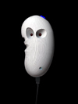 | The Airemin is a USB musical interface that measures its distance from objects using infrared sensing. It is inspired by the desire to have a compact and easy-to-handle Theremin-like device. It can be played with the other hand or scanned against any other object, like another performer. The device has in addition a thumb button on the top and a finger dial on the back. The device effectively gives the user two continuous control axes and a trigger to start/stop events. |
{kind=link}
Design
The original intent was to make a wearable keyboard or continuous pressure control strip. The idea was interesting, but in the end required more complex sensing technologies. To simplify the device, the idea of using one or more rangers (distance sensors) coupled with a button to play a note was discussed. In the end this made the device more practical to implement and easier to learn how to play.
Here are some preliminary sketches of the interface.
The latter design shows holes for two IR sensors (2 pairs of emitters and receivers). The idea was to use the average distance between the sensors as one control and their difference as another. This was a good idea in theory, but after testing it was found that the sensors interfered with each other when they were close. Moving the sensors apart made it impractical to control by tilting your hand.
Here are some preliminary sketches of the interface.
|
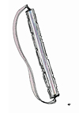 [Keyboard-like Design] |
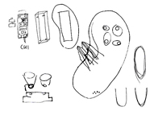 [Infrared Design #1] |
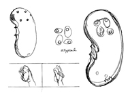 [Infrared Design #2] |
{kind=link}
{kind=link}
{kind=link}
The latter design shows holes for two IR sensors (2 pairs of emitters and receivers). The idea was to use the average distance between the sensors as one control and their difference as another. This was a good idea in theory, but after testing it was found that the sensors interfered with each other when they were close. Moving the sensors apart made it impractical to control by tilting your hand.
Production
Maya was used to construct a 3-d model of the device. You can download the .vrml files here.
The device was then printed using a Z Corp 3d printer.
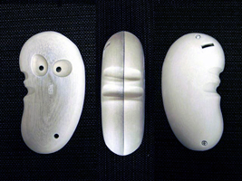
[3d Print]
The next step was to fit the 3d model with the CUI and the IR sensor, button, and dial.
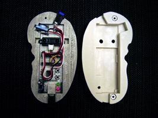
[With electronics]
Finally, the two halves were screwed together and the Airemin was complete.
|
[Front] |
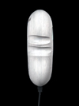 [Left Side] |
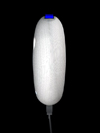 [Right Side] |
 [Inside] |
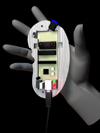 [With CUI and sensors] |
{kind=link}
{kind=link}
{kind=link}
{kind=link}
The device was then printed using a Z Corp 3d printer.
{kind=link}
[3d Print]
The next step was to fit the 3d model with the CUI and the IR sensor, button, and dial.
{kind=link}
[With electronics]
Finally, the two halves were screwed together and the Airemin was complete.
 [Front] |
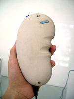 [Back] |
{kind=link}
Demo
The following is a demonstration of the Airemin at the Spring 2006 MAT presentation night. The device was used to control 'Airecell', a sound and graphics work comprised of cellular-like, sound-producing objects drifting over a sea of noise. The cells pulsate in response to user interaction emitting sounds of harmonic sine waves. The IR sensor was mapped to the pitch/x-position of the cells, the dial to the tuning scale/y-position of the cells and the button was used to instantiate new cells.
The sound and graphics were produced using SuperCollider and OpenGL.
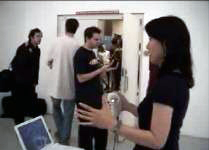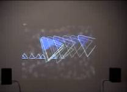
[Quicktime .mov]
[Quicktime .mov]